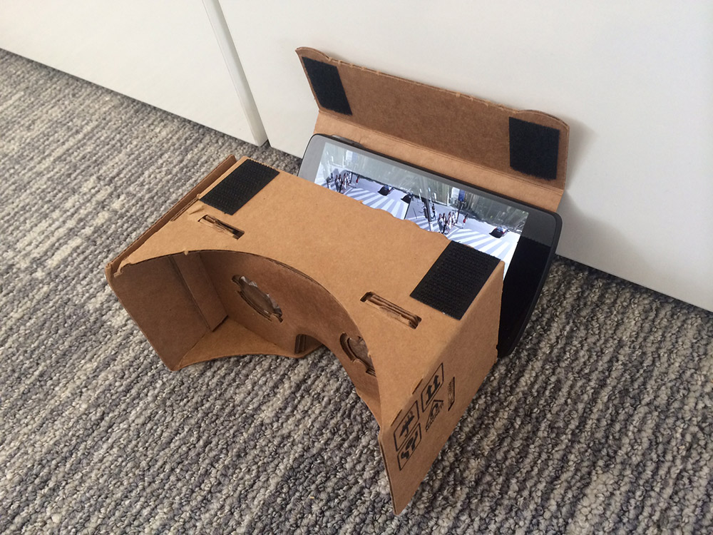

Virtual Reality
in the Browser
An intro to WebVR
Peter O'Shaughnessy | @poshaughnessy


TODO show Fishfinder
But what about the Web?
It's the stuff of science fiction...
...But just in the last few weeks:
Browsers implementing:
- Device discovery
- Full screen extensions
- Sensor integration, e.g. orientation
- Rendering for different hardware
“WebVR”
- "Version Zero"
- Not even in alpha channels yet
WebGL

WebGL

CSS 3D

Code
Warning: APIs will change
if( navigator.getVRDevices ) {
// Chrome
navigator.getVRDevices().then( vrDeviceCallback );
} else if( navigator.mozGetVRDevices ) {
// Firefox
navigator.mozGetVRDevices( vrDeviceCallback );
}
function vrDeviceCallback( vrDevices ) {
for( var i=0; i < vrDevices.length; i++ ) {
// If instance of HMDVRDevice...
// If instance of PositionSensorVRDevice...
}
}var leftFOV =
vrHMD.getRecommendedEyeFieldOfView('left');
var leftTrans = vrHMD.getEyeTranslation('left');
if( canvas.webkitRequestFullscreen ) {
canvas.webkitRequestFullscreen({
vrDisplay: hmdDevice });
} else if( container.mozRequestFullScreen ) {
container.mozRequestFullScreen({
vrDisplay: hmdDevice });
}Add some Three.js and a dinosaur...
Oculus Rift TRex!
Thanks to DK and eyeon Software for lending me the content.
bit.ly/oculus-example
Code example from Google
Google Cardboard
Coding for Cardboard
- No WebVR support yet
- But we can do without it for now...
var effect = new THREE.StereoEffect( renderer );
...
effect.render( scene, camera );
var controls = new THREE.DeviceOrientationControls(
camera, true);
controls.connect();
...
controls.update();
Cardboard TRex! (Minus Cardboard)
Thanks again to DK for lending the dinosaur.
bit.ly/cardboard-example
Code example from Google
Come and try it out!